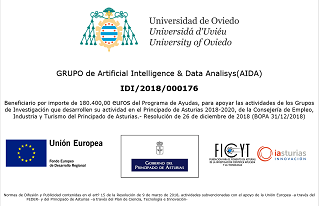

Intelligent Scheduling and Optimization
Optimization and intelligent scheduling for complex planning and decision problems.
Research on intelligent methods for complex, high-dimensional problems in society, industry, energy and transportation.
Explore the research teamWelcome to the website of the AIDA Research Team. Our main goal is to find solutions to real problems of significant interest to society. These include social, industrial, energy and transportation challenges.
The team focuses on problems with high complexity and/or dimensionality, which are therefore more difficult to solve. This usually requires artificial intelligence techniques, the field in which the team specializes. Depending on the problem, our researchers apply intelligent data analysis, machine learning, optimization, soft computing, and models for decision-making under uncertainty.
Optimization and intelligent scheduling for complex planning and decision problems.
Machine learning and data analysis methods for complex real-world applications.
Models and methods for reasoning and decision-making under uncertainty and imprecision.

AIDA's research activities include work supported through regional, national and European research programmes. Select the funding image to view the full GRUPIN 2024 poster.
View funding and project links